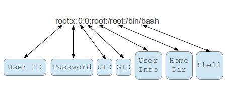

September 29, 2020 - 1 minute read
100 Days of Code - Days 1 to 15
This is the first retrospective of my #100DaysOfCode, compiling the impressions of the first 15 days into the challenge.
Metrics
I coded for 14 hours and 4 minutes, according to WakaTime. However, it does not count the coding I did before installing WakaTime(that happened on Day 3) or the coding inside CodeWars(started on Day 8).

Almost half of the time was expent with Python on projects, the rest of the time was with HTML and Markdown (both for this website maintenance).

Rocked (or things that went really well):
- Access to high-quality material: I followed Henrique Bastos courses awhile. I attended the Welcome to the Django talk at FISL16 and got hooked by his expertise since then. Best course I ever purchased. The material is extremely hands-on and the theory is very easy to follow.
- Diversifying resources: to further my practice in some language fundamentals like dictionaries and lists, I referred to CodeWars. There I could grab challenges in different difficult levels to train the same concepts I was struggling with. HackerRank is also a good one.
Flopped (or things that I should consider stop doing):
- Code in the evenings: it feels like completing a school assignment in the very last minute. Stressful. I do not like it. The code doesn't either; meaning it sucks more the later I start coding.
- Not having a structure: not knowing what I am supposed to study inevitably makes me waste a lot of time deciding WHAT to code in the first place. That leaves less time to figure out HOW to code.
Project Ideas (or things that came to me while learning to code):
- Subtitle linter for my videos, since YouTube's closed-captions have problems with my accent, apparently...
In Conclusion
I learned a lot this 15 days and I expect the same in upcoming weeks. I'll write technical blog posts in the future, when not everything confuses me. For now, I'm documenting my journey from 1 to 100 days.
For more detail on how I did each day, check out my 100 Days of Code Log on Github. Follow me on Twitter for all my 100 Days Of Code tweets.